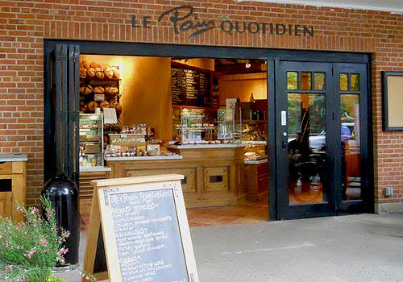

Central Park eatery with indoor & outdoor seating, providing light cafe fare a wide variety of high-quality meals, snacks, beverages, and desserts that include carefully prepared fresh and healthy choices.
Location: East 64th Street and 5th Ave. Directions: Inside Central Park Zoo Hours: 10am - 4:30 Daily
Check out the most recent Yelp reviews before you go.
Ballfields Café
Enjoy salads, sandwiches, burgers and other ballpark snacks at this eatery on the northern edge of the Heckscher Ballfields.
Location: Mid-Park at 65th Street Directions: North of the Heckscher Ballfields Hours: 11am - 7pm Daily
Check out the most recent Yelp reviews before you go.
Le Pain Quotidien

A popular European cafe chain that transformed the concession building north of Sheep Meadow at Mineral Springs, serving bakery fare, healthful salads, handmade breads, and organic drinks.
Location: Mid-Park at West 69th Street Directions: Enter the Park at West 69th Street Hours: Weekdays 7am - 8pm, Weekends 7am - 9pm
This is the express café, not the restaurant. They offer quick bites like burgers, hot dogs, sandwiches and wraps.
Location: East Side between 74th and 75th Streets Directions: Enter at East 72nd St. and Park Drive North Hours: Weekdays 7am - 8pm, Weekends 7am - 9pm
Grab a blanket, bring your own food and enjoy! There's a whole bunch of eating places to choose from all around Central Park. There's WholeFoods, Bouchon Bakery, Juice Generation, Chipotle, The Soup Man, Paris Baguette, you name it, we got it! And don't forget about Columbus Circle Turnstyle Food Court. The possibilities are endless!
Location: Anywhere in Central Park Hours: Park Hours